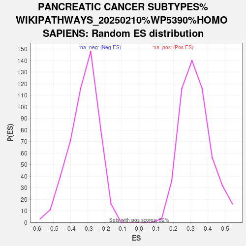

| | | Dataset | Tumour_vs_PDO |
| Phenotype | NoPhenotypeAvailable |
| Upregulated in class | na_pos |
| GeneSet | PANCREATIC CANCER SUBTYPES%WIKIPATHWAYS_20250210%WP5390%HOMO SAPIENS |
| Enrichment Score (ES) | 0.7922628 |
| Normalized Enrichment Score (NES) | 2.4056993 |
| Nominal p-value | 0.0 |
| FDR q-value | 0.0 |
| FWER p-Value | 0.0 |
Table: GSEA Results Summary
 Fig 1: Enrichment plot: PANCREATIC CANCER SUBTYPES%WIKIPATHWAYS_20250210%WP5390%HOMO SAPIENS
Fig 1: Enrichment plot: PANCREATIC CANCER SUBTYPES%WIKIPATHWAYS_20250210%WP5390%HOMO SAPIENS
Profile of the Running ES Score & Positions of GeneSet Members on the Rank Ordered List

Fig 2: PANCREATIC CANCER SUBTYPES%WIKIPATHWAYS_20250210%WP5390%HOMO SAPIENS: Random ES distribution
Gene set null distribution of ES for PANCREATIC CANCER SUBTYPES%WIKIPATHWAYS_20250210%WP5390%HOMO SAPIENS